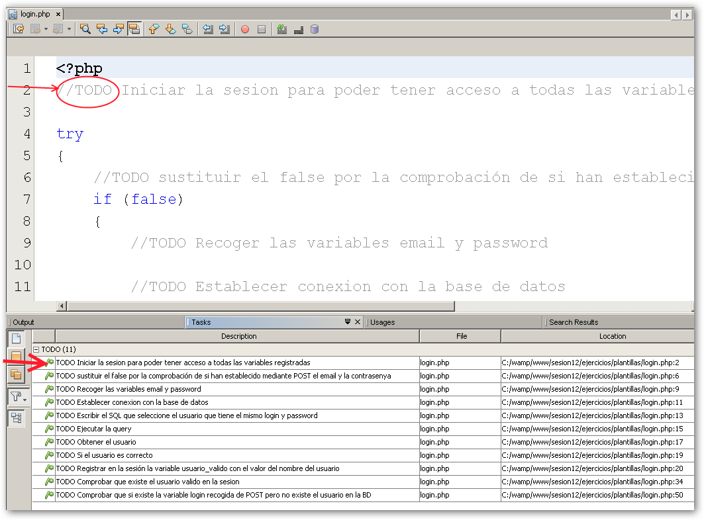
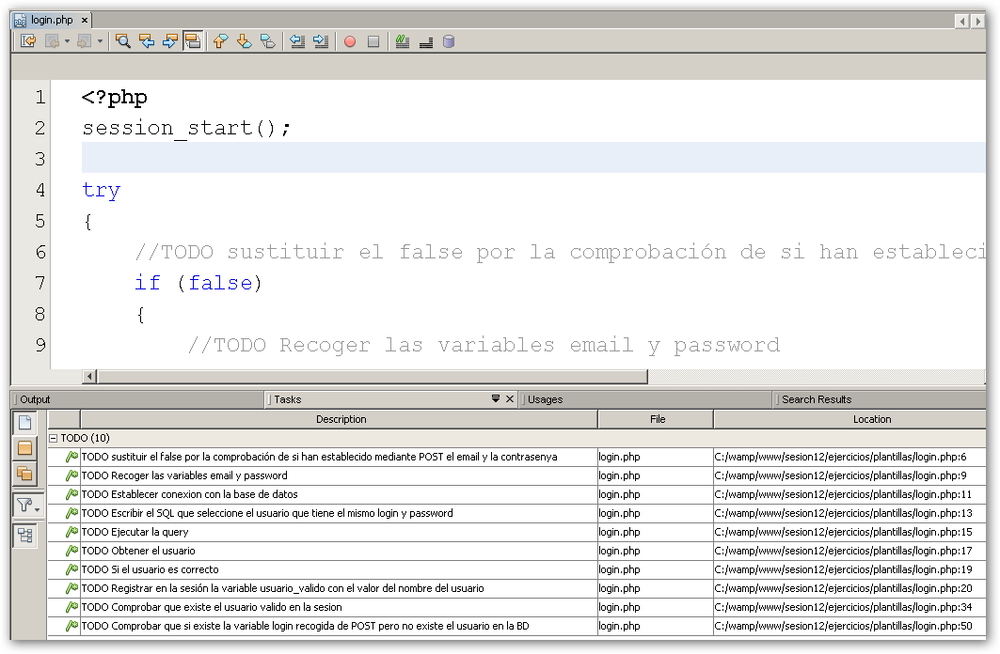

Ejercicios de Control de sesiones
Formulario de login
Descarga de moodle las plantillas "formulario_login.zip" de la sesión "Control de sesiones".Dichas plantillas contienen varios ficheros: un formulario de login, un fichero PHP al que sólo se puede acceder si el usuario está logueado y un fichero que realiza el logout o cierre de la sesión.
Una particularidad que tiene el formulario de login es que se llama así mismo, es decir, el valor de la propiedad **action** es el nombre del mismo formulario de login. Además, tendremos dos campos, uno de texto para el email (email en el formulario) y un campo de tipo password (contrasenya en el formulario).El funcionamiento de dicho formulario es llamarse a sí mismo, recoger vía POST los datos de entrada al principio del script (email y contrasenya) y comprobar si existe ese usuario en la tabla "usuarios" de la base de datos "uazon".
Las plantillas contienen los siguientes ficheros:
- login.php: formulario de entrada que comprueba el email y contraseña. Es un formulario que se llama a sí mismo. Si los datos son correctos, se registra el usuario en la sesión. Si no muestra un mensaje de error y el formulario de login.
- pagina_protegida.php: página a la cual solo pueden acceder usuarios registrados.Si el usuario no está en la sesión (no logueado) no puede ver esta página.
- logout.php: página donde anulamos las variables y cerramos la sesión.
Se pide completar cada fichero PHP usando sentencias preparadas con PDO junto con el uso de excepciones. Se deja como optativo añadir comprobaciones sobre los campos email y contrasenya.
Dentro de cada fichero se han añadido etiquetas //TODO (del inglés "TO DO", por hacer) donde se especifica el código a incluir y así facilitar la resolución de los ejercicios. A continuación se explica en detalle esta característica.
ANEXO:Gestor de tareas en NetBeans
Por convención, cuando insertamos etiquetas en el código fuente de un fichero (siglas en mayúsculas justo después de un comentario), NetBeans detecta esas etiquetas y las añade a un ventana de "Acciones a realizar" donde de un vistazo tenemos las cosas por hacer en ese fichero. Si pinchamos dos veces sobre una de las líneas de dicha ventana nos llevará justo a la línea donde se encuentra el comentario. Cuando completemos dicha tarea, borraremos el comentario entero (si no aporta nada) o tan sólo borrar la palaba TODO o FIXME (el comentario ayuda a entender el código) para que no aparezca más en la lista de tareas.
Destacar que también podemos añadir nuestras propias etiquetas en las opciones generales de NetBeans.
Podemos ver un ejemplo en la siguiente figura:

Como vemos en dicha imagen, tenemos 11 tareas por realizar. Si completamos la primera tarea (línea 2) "**//TODO Iniciar la sesion para poder tener acceso a todas las variables registradas**" del fichero **login.php** y posteriormente borramos todo el comentario, la tarea se borra también de la lista. En la figura que aparece a continuación se ve claramente como después de introducir el código correspondiente y borrar el comentario, la tarea ya no aparece en el listado y cómo ha decrementado el número de tareas a realizar (de 11 a 10).

CMS::Formulario de login
Basándonos en el mockup de la especificación del CMS del proyecto, se pide desarrollar el formulario de login para acceder a la parte privada (ver punto 2.2.1 Acceso/Login de la especificación).
Este ejercicio requiere que previamente hagas el ejercicio 7.21.7.Formulario de acceso al CMS del proyecto de la sesión de "Funciones de cadena y expresiones regulares".
Si lo has realizado, copia el fichero index.php en la carpeta cms/ y el fichero login.php en la carpeta cms/actions/ del proyecto de integración uazon.
Usando Excepciones y sentencias preparadas con PDO tienes que realizar la acción de login **cms/actions/login.php** que comprueba que el email y la contraseña introducidas por el usuario pertenecen a un usuario **administrador**.
En caso de recibir una respuesta correcta el sistema entrará directamente al dashboard o home: cms/home.php activando la sesión $_SESSION["admin"] = "nombre de usuario".
El dashboard (home.php) es como el fichero pagina_protegida.php del ejercicio anterior donde sólo se puede acceder si el usuario está logueado como administrador.
Cuando decimos que "_el sistema entrará directamente al dashboard o home: cms/home.php_" lo que queremos decir es que el usuario será **redirigido** al dashboard o fichero **home.php**
Es importante destacar que todas las páginas interiores tienen que hacer la comprobación de que esta sesión esté activa, en caso de que esta comprobación sea negativa el usuario será redirigido de nuevo a esta misma pantalla **cms/index.php**. En caso de que el usuario sea incorrecto, antes de redirigir al mismo a la página de index, dentro de **cms/actions/login.php** guardaremos en sesión una variable "error" ($_SESSION["error"]) con el valor siguiente "El usuario/contraseña son incorrectos". Posteriormente comprobaremos en la página de index si existe dicha variable en sesión, si existe mostraremos un alert indicando el mensaje de error y procederemos a borrar dicha variable para que no vuelva a aparecer en caso de que el usuario vuelva a recargar la página o vuelva a acceder a dicha página desde la url del navegador.
Este tipo de variables que sólo están disponibles en una redirección y que se borran justo después de usarse, suelen llamarse 'flashdata'. Se usan sobretodo cuando realizamos alguna acción en base de datos que implica una redirección (función redirect) ya que debemos evitar que el usuario vuelva a ejecutar la misma acción al recargar la página. Por ejemplo, al insertar una comentario, borrar o dar de alta un usaurio. etc.
Resumen de ficheros a completar/realizar:
- Formulario de login: cms/index.php
- Acción de login: cms/actions/login.php
- Dashborad: cms/home.php
ANEXO:¿Cómo se realiza una redirección en PHP?
En otros lenguajes tipo ASP o Java disponemos de una función llamada **redirect** la cual nos permite redirigir al usuario a la url especificada como parámetro. El redirect se realiza enviando en las cabeceras del HTTP la orden de redirección (HTTP 301). Más información en este enlace: http://en.wikipedia.org/wiki/HTTP_301
No se recomienda enviar cabeceras HTTP si ya se ha empezado a escribir texto de la página web, aunque sea un simple espacio en blanco, código HTML u otros.
En PHP no disponemos de la función redirect mencionada anteriormente, pero sí que podemos realizar una redirección 301 enviando ese código de estado en el mensaje de respuesta del servidor. Para ello podemos usar la función **Header()** que se usa para enviar encabezados HTTP sin formato. Página de la función header() en el manual de PHP http://docs.php.net/ manual/es/function.header.php
En el siguiente ejemplo (de las primeras sesiones de PHP) vemos como crear una cabecera de respuesta:
<?php
$uri = $_SERVER['REQUEST_URI'];
$foo = $_GET['foo'];
header('Content-type: text/html');
echo 'La URI solicitada es: ' . $uri;
echo 'El valor del parámetro "foo" es: ' . $foo;
?>
En este ejemplo estamos creando una respuesta HTTP. Usamos la función **header()** para añadir la cabecera "**Content-Type: text/html**" en el mensaje de respuesta.
PHP creará una verdadera respuesta HTTP y la devolverá al cliente:
HTTP/1.1 200 OK
Date: Wed, 16 Oct 2013 13:42:30 GMT
Server: Apache/2.2.22 (Win32) PHP/5.3.13
X-Powered-By: PHP/5.3.13
Content-Length: 95
Keep-Alive: timeout=5, max=100
Connection: Keep-Alive
Content-Type: text/html
La URI solicitada es: /sesion02/request.php?foo=hola<br >El valor del parámetro "foo" es: hola
El siguiente ejemplo es una forma elegante de comprobar si un usuario está logueado en una aplicación, negando el acceso en caso de que no lo esté, ya que, lo redirigimos a la página que contiene el formulario de login (login.php). Este sería el código:
<?php
//fichero pagina_protegida.php
session_start();
if (!isset($_SESSION['admin']))
header( "Location: login.php" );
//el usuario está loguegado. Cargamos la página
?>
Veamos el siguiente ejemplo:
<head>
<title>Hola</title>
</head>
<?php
header('Location: login.php');
?>
El anterior ejemplo no "funcionaría" en algún caso en concreto (por ejemplo que no estuviera activo el buffer de salida), ya que, antes del header se ha escrito código HTML, en este caso es información de cabecera, pero esta cabecera del documento HTML no es la mencionada cabecera del HTTP, que la mandan los servidores internamente sin que el programador participe activamente, salvo para introducir información como una redirección 301 con la función header PHP.
Almacenamiento en un buffer intermedio
En las últimas versiones de PHP, desde la 5.2, se utiliza un buffer de almacenamiento que tiene como misión ir recogiendo el código HTML resultante de la ejecución de la página PHP (Excluyendo cabeceras y cookies) antes de mandarla al cliente. El buffer se va llenando y cuando termina de ejecutarse la página se manda definitivamente por Internet hasta el ordenador del usuario.
La utilización de un buffer de salida PHP se encuentra actualmente activada por defecto. Según el manual de PHP proporciona bastantes beneficios en el rendimiento del servidor, ya que, se generen menos paquetes frente a la salida de PHP en streaming.
Así pues, el ejemplo anterior donde se escribía en la página antes de ejecutar el header, aunque está mal diseñado en cualquier caso, puede dar error o puede no dar ningún error. Todo depende de si se había o no enviado texto al cliente previamente a la realización del header.
Todo esto tiene mucho que ver con el buffer, pues, si se está utilizando, no se envía nada al cliente y el header se realiza sin haber enviado texto, aunque sí se haya escrito en la página. Si no se utiliza el buffer, el texto colocado antes del header sí se hubiese enviado al cliente y al ejecutar el header aparecería un error de PHP donde nos avisa de que las cabeceras ya han sido enviadas al cliente y ya es imposible modificarlas.
La directiva del php.ini que gestiona el búffer de salida se llama **output_buffering** y tiene el valor 4096 bytes. A continuación vemos el código relacionado dentro del php.ini:
```bash ; output_buffering ; Default Value: Off ; Development Value: 4096 ; Production Value: 4096 output_buffering = 4096 ```Para ampliar la información del búffer de salida PHP accede al siguiente enlace al manual de PHP: http://www.php.net/manual/es/book.outcontrol.php
(OPTATIVO)Formulario de login - Cierre de sesión automática
Añade una variable a la sesión llamada "ultimoAcceso". Dicha variable almacenará en la sesión la fecha del último acceso correcto a la web. Dentro de login.php se registrará (justo después de registrar usuario_valido) la variable "ultimoAcceso" con el valor que nos devuelve la función date( ) con ese patrón (fecha y hora actual). En el fichero "pagina_protegida.php", justo después donde se comprueba que el usuario es válido, habrá que:
- Recoger la fecha del último acceso almacenada en la sesión.
- Crear una nueva variable con la fecha y hora actual (con el mismo formato de fecha que el anterior)
- Calcular el tiempo transcurrido entre la fecha actual y la fecha almacenada en la sesión. Usaremos la función strtotime() que devuelve el tiempo transcurrido entre el "01/01/1970" y la fecha y hora actual. Mas información en: http://docs.php.net/manual/es/function.strtotime.php
- Si el tiempo transcurrido es igual o superior a 600 (10 minutos), se cerrará la sesión y se redirigirá al usuario a la página de login con la función header()